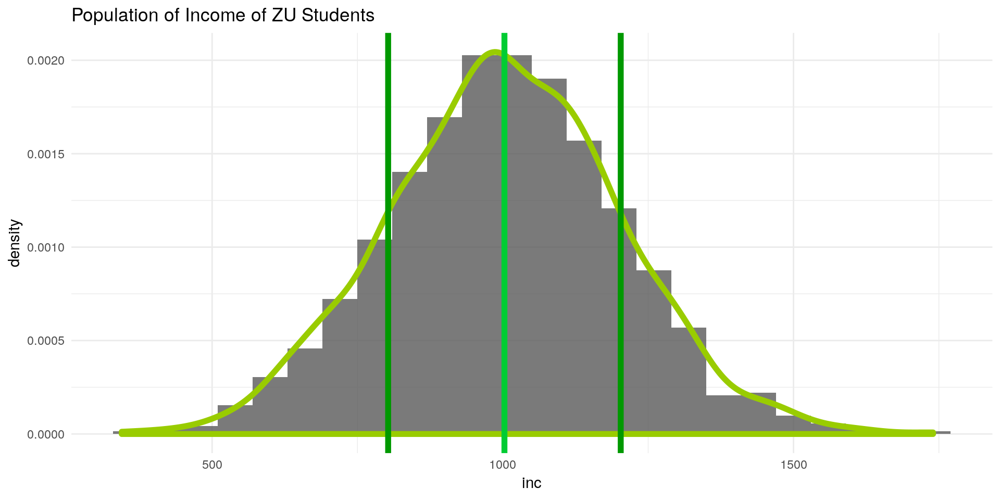
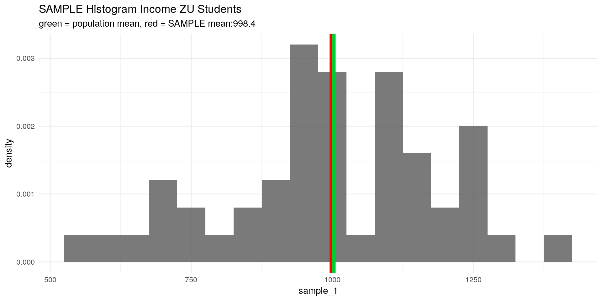
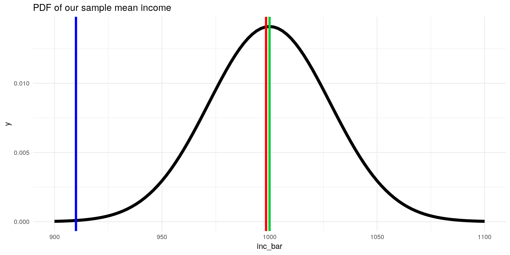
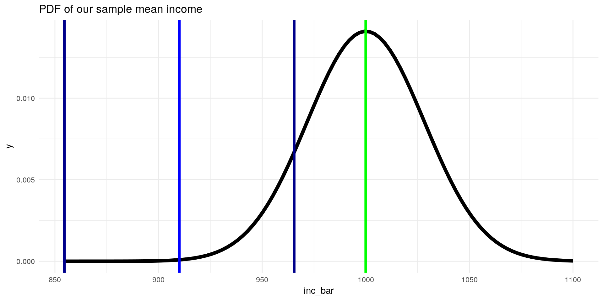
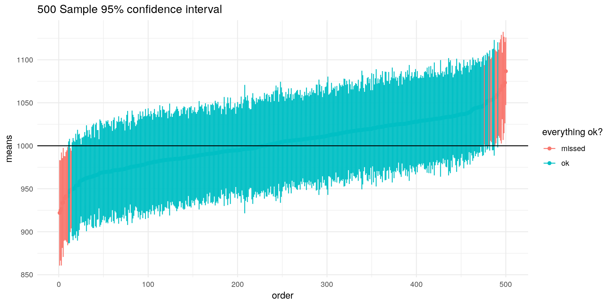

Using our knowledge of random variables and their features, we are now able to conduct some basic inference. This means that we can utilise the information from a random sample of i.i.d. variables to learn something about the population of these variables.
In this part we’re going to:
Let’s look at an example. Suppose know the population of ZU students income:
library(ggplot2)
set.seed(11) # seed for reproducibility
n <- 1200
inc <- rnorm(n, mean = 1000, sd = 200) # simulate a vector of incomesggplot() +
geom_histogram(aes(x = inc, y = ..density..),binwidth = 60,alpha = 0.8) +
geom_density(aes(x = inc, y = ..density..),col = "#99CC00",size = 2) +
labs(title = "Population of Income of ZU Students") +
geom_vline(xintercept = mean(inc),color = "#00CC33",size = 2) +
geom_vline(xintercept = mean(inc) + 200,color = "#009900",size = 2) +
geom_vline(xintercept = mean(inc) - 200,color = "#009900",size = 2) +
theme_minimal()
Since we have simulated the population, we are in a position where we know:
Suppose now we are interested in the mean of the population (the green line). Given a sample from this distribution, our task now is to estimate the population mean as good as we can.
Often we don’t have knowledge of our population, but have a sample.
From these samples, we can derive knowledge about our population. E.g. its basic moments: the mean and the variance.
Using a sample to derive a moment (or parameter) is called Estimation
Generally:
E.g. we can estimate the parameter \(\mu\) by calculating the arithemtic mean from a sample.
Given a random sample \(\{X_1, X_2, \dots, X_n\}\) we can calculate the sample mean by:
\[ \bar{X} = \frac{1}{n} \sum_{i=1}^n X_i \qquad \text{sample estimator for } \mu_{inc}\]
which is also known as the arithmetic mean. Let’s simulate a random sample from our ZU students income and calculate the arithmetic mean (with mean():
library(tidyverse)
set.seed(24)
sample_1 <- sample(x = inc, size = 50, replace = F) # draw a sample from the simulated population
x_bar <- mean(sample_1)
ggplot() +
geom_histogram(aes(x = sample_1,
y = ..density..),binwidth = 50,alpha = 0.8) +
labs(title = "SAMPLE Histogram Income ZU Students",
subtitle = paste0("green = population mean, ",
"red = SAMPLE mean:",
x_bar %>% round(2))) +
geom_vline(xintercept = x_bar,color = "red",size = 2) + # this draws the sample mean as red line
geom_vline(xintercept = mean(inc),color = "#00CC33",size = 2)+
theme_minimal()
But how can we draw an inference about the population mean \(\mu_X\) from this? It could well be that our proposed \(\bar{X}\) is a very bad estimator for \(\mu_X\).
Unbiasedness means that our estimator derived from a random sample on average predicts the population parameter. In our case we expect the arithmetic mean (red line) from our sample to predict, on average, the population mean (green line), i.e. that \(\bar{X}\) would have a distribution so that: \[ \mathbb{E}[\bar{X}] = \mu_X \]
Notice how we now treat our \(\bar{X}\) as if it were a random variable – thats because it is! Since it is a linear combination of random variables \(X_i\) with a constant \(n^{-1}\), we can treat it just like we would treat any other random variable.
The bias of our estimator is then given by: \[ \begin{aligned} Bias[\bar{X}] &= \mathbb{E}[\bar{X}] - \mu_X \\ &= 0 & \text{if the estimator is unbiased} \end{aligned} \]
So if \(\mathbb{E}[\bar{X}]\) is equal to \(\mu_X\), our arithmetic mean would be unbiased. Lets prove this:
\[\begin{aligned} \mathbb{E}[\bar{X}] &= \mathbb{E} \left[ \frac{1}{n} \sum_{i=1}^n X_i \right] \\ &= \frac{1}{n} \mathbb{E} \left[ \sum_{i=1}^n X_i \right] \\ &= \frac{1}{n} \sum_{i=1}^n \mathbb{E} [X_i] \\ &= \frac{1}{n} \sum_{i=1}^n \mu_X \\ &= \frac{1}{n} n \mu_X \\ &= \mu_X \end{aligned} \]
Not to be confused with the SAMPLE variance: here we calculate the variance of an estimator derived from the sample, not the variance of the sample itself!
Knowing that our arithmetic mean, on average, hits the population mean is good to know. But how often (or by how much) does it deviate from it? It would be nice to know the variability or spread of our estimator. As we learned, the variability of a random variable can be calculated as the variance.
The variance of an estimator is called the sampling variance and is in our case given by:
\[ Var[\bar{X}] = \frac{\sigma_X^2}{n} \]
The proof of this is very similar to the proof above, you might want to give it a try yourself.
The sampling standard deviation is then given by the square root of the sampling variance: \[ sd[\bar{X}] = \frac{\sigma_X}{\sqrt{n}} \]
Since we now know the first two moments of our sample mean \(\bar{X}\), we can draw its distribution (given that is it is normally distributed):
\[ \mathbb{E}[\bar{inc}] = \mu_{inc} = 1000 \] \[sd[\bar{inc}]= \frac{\sigma_{inc}}{\sqrt{n}} = \frac{200}{\sqrt{50}} = 28.28\]
So we know now that our sample mean is distributed normally with mean \(1000\) and standard deviation \(28.28\). This is crucial: now we know how our estimator for the mean is distributed:
ggplot(data = data.frame(inc_bar = 900:1100), aes(x=inc_bar)) +
stat_function(fun = dnorm, args = list(mean = 1000, sd = 200/sqrt(50)), size = 2) +
geom_vline(xintercept = mean(sample_1), color = "red", size = 1.5) +
geom_vline(xintercept = 1000, color = "#00CC33", size = 1.5) +
geom_vline(xintercept = 910, color = "blue", size = 1.5) +
labs(title = "PDF of our sample mean income") +
theme_minimal()
What have we learned so far?
Given that we know the population mean and variance, we can construct an interval around our estimated mean student income that contains the population mean income with a certain probability.
How? since we know that our sample mean is distributed normally, we can standardise it:
\[ Z= \frac{X - \mu_X}{\sigma_X} \qquad \text{general z-standardisation formula} \] \[ Z_{\bar{inc}} = \frac{\bar{inc} - \mu_{inc}}{\sigma_{inc} / \sqrt{n}} = \frac{998.4 -1000}{28.28} = - 0.056\]
and take the fact that \(95 \%\) of the values of a standard normal variable lie in the interval \([-1.96, 1.96]\) (see z-table to see how likely our sampled mean income is from our population:
ggplot(data = data.frame(Z_inc_bar = -4:4), aes(x=Z_inc_bar)) +
stat_function(fun = dnorm, args = list(mean = 0, sd = 1), size = 2) +
stat_function(fun = dnorm, xlim = c(-1.96,1.96), geom = "area", fill = "darkgrey", alpha=0.5) +
stat_function(fun = dnorm, xlim = c(-4,-1.96), geom = "area", fill = "black", alpha=0.5) +
stat_function(fun = dnorm, xlim = c(1.96,4), geom = "area", fill = "black", alpha=0.5) +
geom_vline(xintercept = (mean(sample_1) - 1000) / (200/sqrt(50)), color = "red", size = 1.5) +
geom_vline(xintercept = (910 - 1000) / (200/sqrt(50)), color = "blue", size = 1.5) +
geom_vline(xintercept = 0, color = "green", size = 1.5) +
labs(title = "PDF of our standardised sample mean income") +
theme_minimal()Only in \(5\%\) of cases we observe sample means in the dark grey area. That means, if we have an income sample and calculate a mean income of \(910€\), we can conclude that the sample is very unlikely to be from the ZU students population.
We can also construct an interval around our sampled mean income \(\bar{inc}\) that contains \(\mu_{inc}\) in \(95 \%\) of cases:
\[ \left[ \bar{x} - \frac{1.96 \sigma_X }{\sqrt{n}}, \bar{x} + \frac{1.96 \sigma_X }{\sqrt{n}} \right] \qquad \text{general confidence interval formula}\] \[ \left[ \bar{inc} - \frac{1.96 \sigma_{inc} }{\sqrt{n}}, \bar{inc} + \frac{1.96 \sigma_{inc} }{\sqrt{n}} \right] = \left[ 998.4 - \frac{1.96 *200 }{\sqrt{50}}, 998.4 + \frac{1.96 *200 }{\sqrt{50}} \right] = [942.96,1053,84] \]
ggplot(data = data.frame(inc_bar = 900:1100), aes(x=inc_bar)) +
stat_function(fun = dnorm, args = list(mean = 1000, sd = 200/sqrt(50)), size = 2) +
geom_vline(xintercept = mean(sample_1), color = "red", size = 1.5) +
geom_vline(xintercept = 1000, color = "green", size = 1.5) +
geom_vline(xintercept = mean(sample_1) - (1.96 * 200 /sqrt(50)), color = "darkred", size = 1.5) +
geom_vline(xintercept = mean(sample_1) + (1.96 * 200 /sqrt(50)), color = "darkred", size = 1.5) +
labs(title = "PDF of our sample mean income") +
theme_minimal()In \(95 \%\) of samples we draw we draw the constructed interval would contain \(\mu_{inc}\), in this case denoted by the red lines, \([987,1009]\). But we could also observe in, \(5\%\) of cases, interval estimates that don’t contain the true mean ZU student income:
ggplot(data = data.frame(inc_bar = 900:1100), aes(x=inc_bar)) +
stat_function(fun = dnorm, args = list(mean = 1000, sd = 200/sqrt(50)), size = 2) +
geom_vline(xintercept = 910, color = "blue", size = 1.5) +
geom_vline(xintercept = 1000, color = "green", size = 1.5) +
geom_vline(xintercept = 910 - (1.96 * 200 /sqrt(50)), color = "darkblue", size = 1.5) +
geom_vline(xintercept = 910 + (1.96 * 200 /sqrt(50)), color = "darkblue", size = 1.5) +
labs(title = "PDF of our sample mean income") +
theme_minimal()
If we take 500 samples and construct their confidence intervals for \(95\%\) we get a nice visualisation of this:
library(tidyverse)
nn <- 500
set.seed(11)
samples <- map(.x = 1:1000,
.f = ~ sample(inc,size = 50,replace = FALSE))
means <- map_dbl(samples[1:nn],~mean(.x))
se <- map_dbl(samples[1:nn],~ sd(.x)/sqrt(length(.x)))
lower = means-1.96*se
upper = means+1.96*se
df <- data.frame(means,lower,upper)[order(means),] %>%
mutate(order = 1:nrow(.),
coll = ifelse(upper < 1000 | lower > 1000,"missed","ok"))
ggplot(df) +
geom_point(aes(x = order,
y = means,
col = coll)) +
geom_segment(aes(x = order-0.02,xend = order + 0.02,
y = lower,yend = upper,col = coll)) +
labs(title = "500 Sample 95% confidence interval") +
scale_color_discrete(name = "everything ok?")+
geom_hline(aes(yintercept =1000)) +
theme_minimal()
Here we can clearly see that our interval estimate doesnt directly tell us something of our specific sample, but about our sampling procedure itself.
(Props to Marcel Schliebs for this visualisation)
qnormEstimating the variance of the sample is useful, e.g. if we would like to calculate the sampling variance described just above. An unbiased estimator of the first moment – the sample variance – is given by:
\[ S^2 = \frac{1}{n-1} \sum_{i=1}^2 (X_i - \bar{X})^2 \]
We divide by \(\frac{1}{n-1}\) because we use \(\bar{X}\) and not \(\mu_X\). The details can be looked up here.
The sample standard deviation is given by: \[ S = \sqrt{S^2} \]
This estimator is not unbiased. However it is a consistent estimator for \(\sigma\) and we can still use it. For the sake of brevity we will skip the discussion of consistency here.